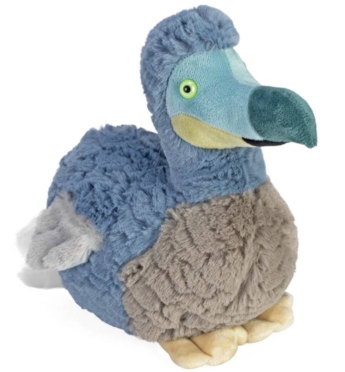

Picture book · Ages 4–8
Dak Dak meets a Dodo Bird
A story about meeting someone the world stopped making.
Buy on AmazonAlso on Kindle · your local bookshop
About the book
Dak Dak has never met anyone quite like the strange, round, flightless bird at the far end of the garden. The dodo has never met anyone at all, not for a very long time.
What follows is a friendship built out of questions, a few misunderstandings, and one very long afternoon. A warm, funny story for young readers about curiosity, kindness, and paying attention to the things we might otherwise lose.
Book details
- Author
- Kelly DaSilva
- Ages
- 4–8
- Pages
- 32
- Format
- Paperback picture book
- Published
- 2026
- ISBN
- 978-0-00-000000-0